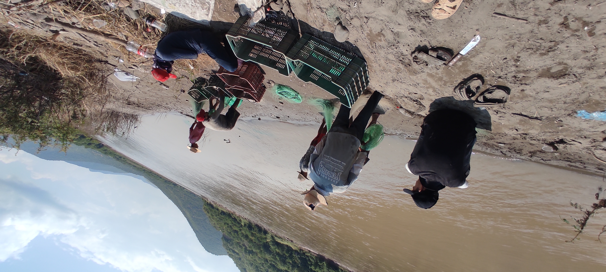

INFORMACION SOBRE LA PESCA DE LA MOJARRA TILAPIA
Pesacadores del rio balsas:

Como objetivo principal en esta pagina explicare un poco de como es que se realiza la pesca de la mojarra tilapia.
El rio balsas es conosido como uno de los rios mas grandes del pais,
ya que es un río del centro sur de México que fluye en dirección oeste
por los estados de Guerrero y Michoacán hasta desaguar en el océano Pacífico.
Con un escurrimiento superficial de 24 944 hm³ y con una longitud de 1000 km,
El río discurre por los estados de Guerrero, Michoacán, Puebla (donde es
conocido como río Atoyac) y Tlaxcala (donde es conocido como río Zahuapan).
Drena además parte de los estados de Veracruz, Morelos, Oaxaca, Estado de
México y Jalisco, la que es conocida como depresión del Balsas.
En las orillas de este rio balsas, se encuentran algunas áreas de trabajo, en las cuales un grupo
de personas se encuentran trabajando en la pesca de la mojarra tilapia, como es que estos
pescadores realizan la pesca de estos peses, pues en el transcurso de esta página aprenderás
una de las formas de pescar y recolectar este tipo mojarra.
El lugar de pesca de estas personas se encuentra localizado cerca de la tenencia de San
Jerónimo, Municipio de Huetamo Michoacán. Este lugar se le conoce como la Omita, este esta
entre San Jerónimo y Estimucha, ahí también se encuentra el embarcadero el Poporo, por el
cual pueden cruzar de Michoacán a Guerrero.
Para poder pescar se necesita un lugar permiso, el cual se puede solicitar en la cooperativa de
San Jerónimo, con este permiso podrás registrar un lugar de pesca siempre y cuando no
moleste a los demás pescadores (No tiene que ser un lugar donde se encuentren mas
pescadores, tiene que estar dentro del rango de la cooperativa de ese pueblo).
"Forma de trabajo"